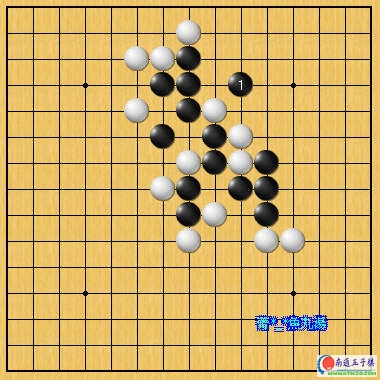
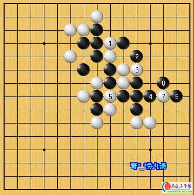
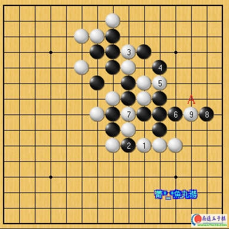
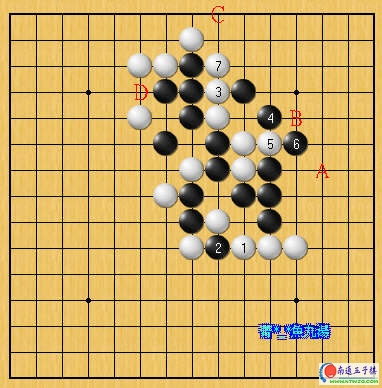
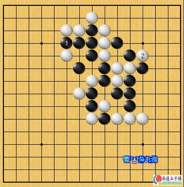
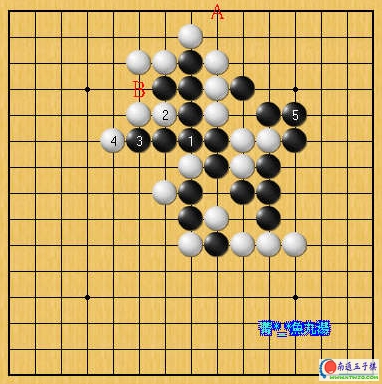

全局性的五子棋
#1 全局性的五子棋作者：有志青年 发表时间：2007-3-29 12:37:57
废话不多说，请直接看以下的实战图例。

图1︰黑1跳三的局面。换作是您来下的话，焦点会放在哪边呢？
我想大多数人都会把焦点放在防守黑的跳活三这个局部上吧？但如果真是如此的话，

图2︰白若真的从1位下手则功力明显不够，黑2以下使用最简单的连续衝四取胜了！
换句话说，图1的局面白方直接防守跳三的构想明显不成立。

图3︰白1先跳四再3位防守如何？事实上，这是白方最强最好的抵抗！黑接下来如果照图2的方式来连续衝四的话，A点已经不是死四活三点。
上面的图例告诉我们，下棋时不能光看局部，在下每一手棋之前必须时时审视整体的盘面，而不是对方下在哪边你就一定要跟著下在那边。棋是活的，如果下棋时总是只拘泥在局部的得失将大大阻碍棋力的提升，希望各位读者谨记。
↓↓↓↓↓题外话↓↓↓↓↓

图4︰此為图3白1、3后的变化。黑6活三意图是白7如A挡则接下来黑下B位则可以简单取胜。但白有7位反向防守的抵抗，此棋留有C→D的手段黑无法顺利下在B位简单取胜。
但，黑接下来只能单纯在左边防守吗？

图5︰黑1单纯防守实在太弱，被白2在右边抢先一步破坏之后黑已断然失去胜机。

图6︰黑1、3连衝两次四是最高效率的下法，白A→B的取胜手段已经消失。其后黑得以顺利抢先下在5位结束棋局！
图3和图2黑虽然同样都能取胜﹙图3白1、3后黑的正确胜法即是图4和图6﹚，但图3白的下法明显能製造出黑方取胜路途上不少的麻烦。
将这6个图反覆研究理解后，若能对读者棋力的提升多少有点帮助，则是笔者的荣幸！
#2 Re:全局性的五子棋作者：来客沙丝 发表时间：2009-3-26 19:19:45
要多看几遍的。
#3 Re:全局性的五子棋作者：我能我能我能 发表时间：2009-8-11 0:43:33
uiohihh#4 Re:全局性的五子棋作者：nara 发表时间：2009-8-12 14:06:54
图文并茂！不错！赞一个！
同时期待能多一些这样讲解的文章！
#5 Re:全局性的五子棋作者：棋神的伴读 发表时间：2009-8-14 12:01:21
新手学习了
#6 Re:全局性的五子棋作者：初级棋士 发表时间：2009-9-15 18:01:16
精彩！学习了！#7 Re:全局性的五子棋作者：书云 发表时间：2009-9-25 12:45:57
那这棋究竟谁赢？#8 Re:全局性的五子棋作者：最爱绿茶 发表时间：2009-10-19 17:01:13
学习了，谢谢
#9 Re:全局性的五子棋作者：新手十四 发表时间：2009-10-27 13:21:36
谢了
#10 Re:全局性的五子棋作者：不吃胡萝卜 发表时间：2009-10-27 23:40:36
很精彩，学习了！#11 Re:全局性的五子棋作者：法源海 发表时间：2009-10-28 21:13:15
如何走出来的局?#12 Re:全局性的五子棋作者：大雪无痕 发表时间：2009-10-29 8:59:28
 简单明了，深入浅出
简单明了，深入浅出#13 Re:全局性的五子棋作者：何帅 发表时间：2009-11-2 22:54:22
确实很精彩~~~辛苦了！！！#14 Re:全局性的五子棋作者：小頑童 发表时间：2009-11-7 16:10:34
本人愚見,覺得黑可以很快就贏...因為若黑下一步下在黑6下面的兩位下面,之後在以跳4方法就可取勝...若有什麼地方說錯請見諒...
#15 Re:全局性的五子棋作者：慎终如始 发表时间：2012-10-20 23:30:39
讲的很透，受教了